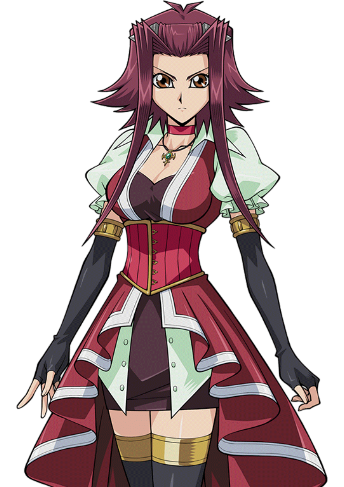

|
Ambientada vários anos após as séries anteriores, Yu-Gi-Oh! 5D's mostra que os duelos avançaram bastante e acabaram se ramificando em 2 tipos de duelos, os duelos clássicos e os novos chamados de "Riding Duels". Esses novo tipo de duelo é disputado em grandes estádios, e os duelistas pilotam motocicletas que são conhecidas como "D-Wheels". No entanto, nesse novo tipo de duelo, as cartas magicas, usadas em duelos normais são substituídas por magias de velocidade, que so podem ser ativadas dependendo da quantidade de contadores de velocidade o piloto tem, os duelos ainda são realizados em "discos de duelo" como em Yu-Gi-Oh! Duel Monsters e Yu-Gi-Oh GX. A história começa quando Yusei Fudo tem seu D-Wheel e sua carta Stardust Dragon roubados pelo seu rival Jack Atlas. Ele vai atrás de Jack para recuperá-los saindo da sua cidade Satellite, que é a parte "pobre" de Neo Domino City, depois descobrindo que foi a parte mais atingida durante o incidente conhecido como Zero Reverse. Eles se encontram, e acabam duelando. Eles invocam seus dois monstros mais fortes. |
|
YUSEI FUDO |
JACK ATLAS |

AKIZA IZINSKI |
|
CROW HOGAN |
LUNA |
LEO |
|
STARDUST DRAGON |
DRAGÃO ARCDEMÔNIO |
DRAGÃO FADA ANTIGO |
|
DRAGÃO DA ROSA NEGRA |
DRAGÃO DAS ASAS NEGRAS |
DRAGÃO FLUXO DE VIDA |
|
GUERREIRO SUCATA |
DRAGÃO EXPLOSÃO ESTELAR |
DRAGÃO NOVA VERMELHO |